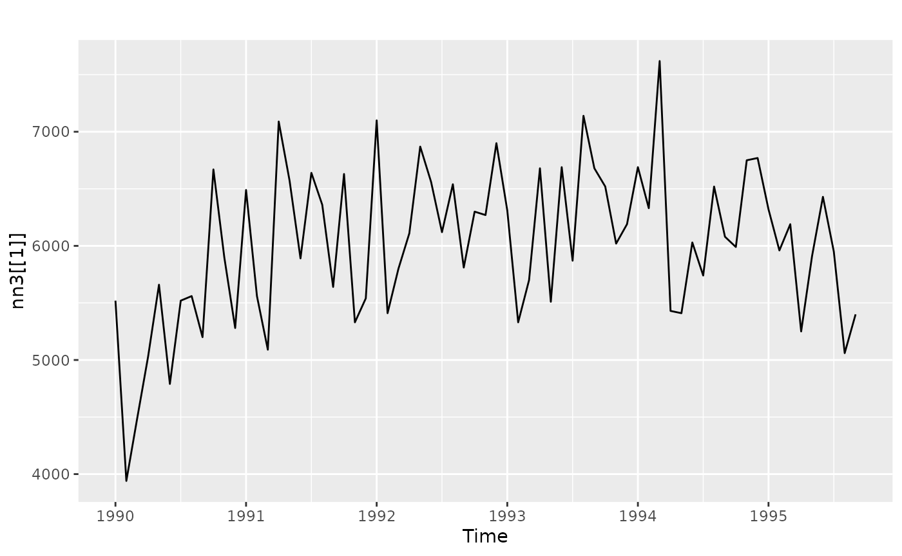
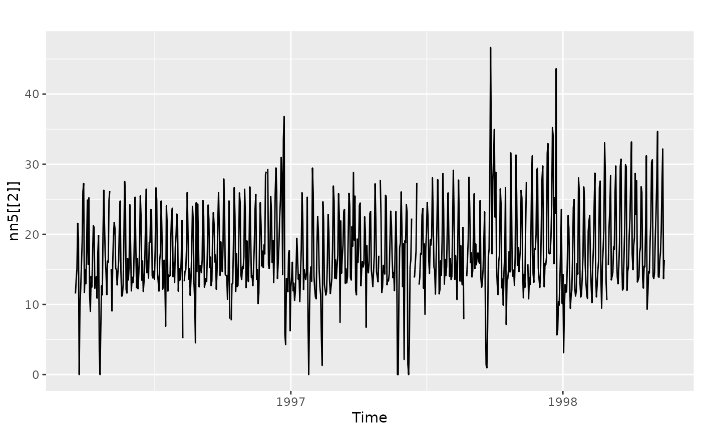
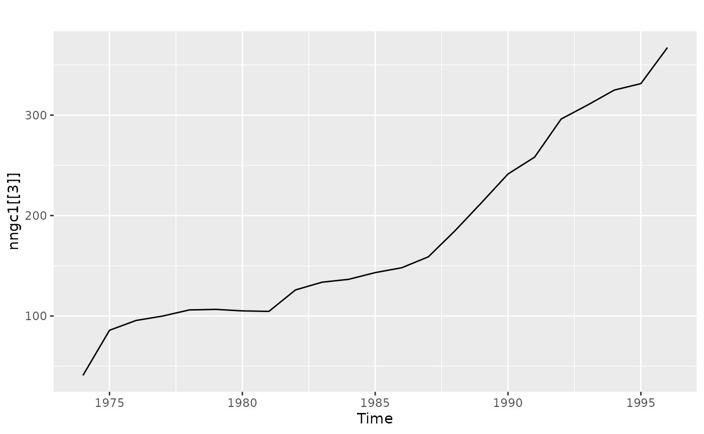
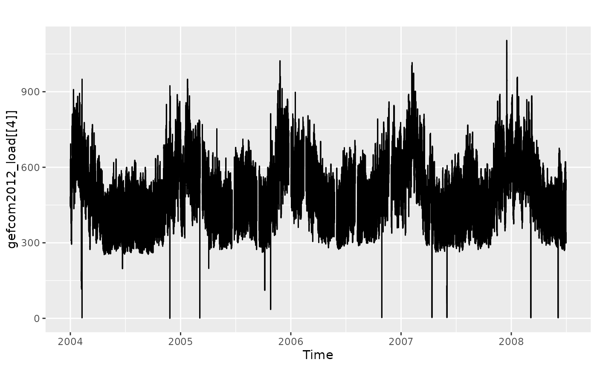
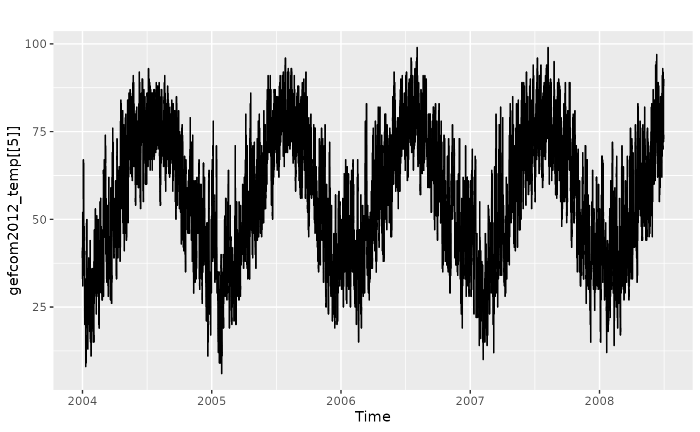
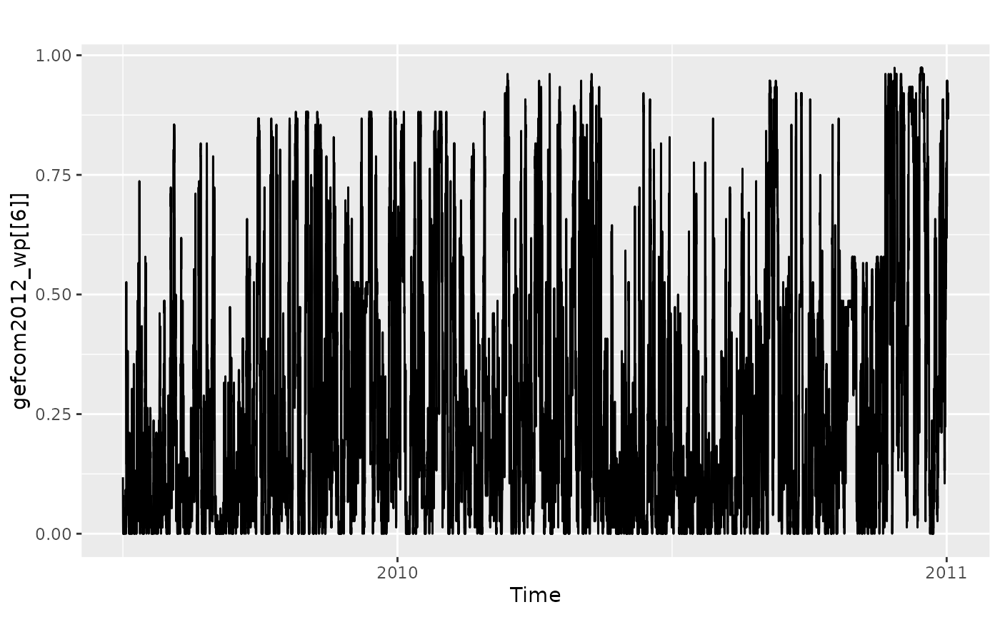
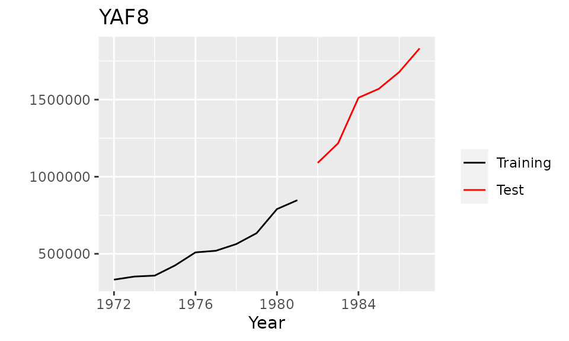
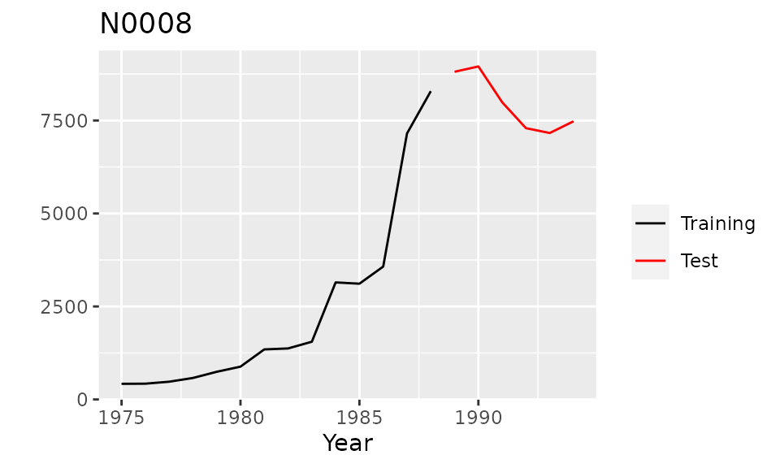
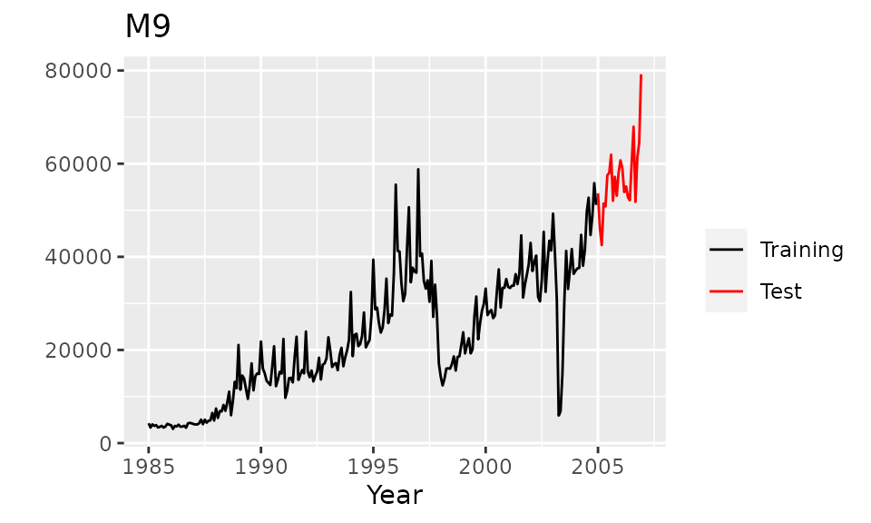

Introduction to the tscompdata package
Yangzhuoran Yang
2023-07-18
Source:vignettes/tscompdata.Rmd
tscompdata.Rmdtscompdata
The R package tscompdata provides time series data from the following forecasting competitions: M, M3, NN3, NN5, NNGC1, Tourism and GEFCom2012.
The M, M3 and Tourism data are loaded from the Mcomp and Tcomp packages. The remaining data are contained within the tscompdata package.
Installation
You can install the development version from Github with:
# install.packages("devtools")
devtools::install_github("robjhyndman/tscompdata")Usage
library(tscompdata)
#> Loading required package: Mcomp
#> Loading required package: forecast
#> Registered S3 method overwritten by 'quantmod':
#> method from
#> as.zoo.data.frame zoo
#> Loading required package: Tcomp
library(ggplot2)NN3 data
Data from the NN3 forecasting
competition, comprising 111 monthly time series each of class
ts.
Training and test data are combined. In the competition, the last 18 months were used as test data. Time series NN3-101 to NN3-111 made up the reduced data set from the competition.

NN5 data
Data from the NN5 forecasting
competition, comprising 111 daily time series each of lass
msts.
Training and test data are combined. In the competition, the last 56 days were used as test data. Time series NN5-101 to NN5-111 made up the reduced data set from the competition.

NNGC1 data
Data from the NNGC1 forecasting
competition, comprising 11 annual time series, 11 quarterly time
series, 11 monthly time series, 11 weekly time series, 11 daily time
series and 11 hourly time series each of class ts or
msts. Only training data are provided.
head(nngc1[[3]])
#> Time Series:
#> Start = 1974
#> End = 1979
#> Frequency = 1
#> [1] 40.833 85.797 95.567 99.921 106.035 106.587
autoplot(nngc1[[3]])
GEFCOM2012 load data
Data from the GEFCOM2012 forecasting
competition which was hosted on the kaggle
platform. The data comprise 20 time series containing hourly load
data from 20 zones in the United States, each of class
msts. Only training data are provided. The missing data in
each series formed the test sets.
head(gefcom2012_load[[4]])
#> Multi-Seasonal Time Series:
#> Start: 2004 1
#> Seasonal Periods: 24 168 8766
#> Data:
#> [1] 484 457 450 448 444 490
autoplot(gefcom2012_load[[4]])
GEFCOM2012 temperature data
Data from the GEFCOM2012 forecasting
competition which held on the kaggle
platform. The data comprise 11 time series containing hourly
temperature data from 11 weather stations in the United States, each of
class msts.
head(gefcom2012_temp[[5]])
#> Multi-Seasonal Time Series:
#> Start: 2004 1
#> Seasonal Periods: 24 168 8766
#> Data:
#> [1] 42 42 40 39 40 41
autoplot(gefcom2012_temp[[5]])
GEFCOM2012 wind power data
Data from the GEFCOM2012 forecasting
competition which held on the kaggle
platform. The data comprise 7 hourly time series containing wind
power data from 7 wind farms, each of class msts. Only
training data are provided. The missing data in each series formed the
test sets.
head(gefcom2012_wp[[6]])
#> Multi-Seasonal Time Series:
#> Start: 2009 4384
#> Seasonal Periods: 24 168 8766
#> Data:
#> [1] 0.118 0.066 0.026 0.013 0.000 0.013
autoplot(gefcom2012_wp[[6]])
Mcomp: M1 data
The 1001 time series from the M competition, taken from demography, industry and economics, and ranging in length between 9 and 132 observations. All the data were either non-seasonal (e.g., annual), quarterly or monthly. All the data were positive, which made it possibly to compute mean absolute percentage errors, but is not really reflective of the population of real data.
M1 is of class Mcomp with each time series
of class Mdata. The function subset inherited
from the Mcomp package
can return a subset specified by periods, or types of data or both. See
the Mcomp package for
more details.
M1
#> M-Competition data: 1001 time series
#>
#> Type of data
#> Period DEMOGR INDUST MACRO1 MACRO2 MICRO1 MICRO2 MICRO3 Total
#> MONTHLY 75 183 64 92 10 89 104 617
#> QUARTERLY 39 18 45 59 5 21 16 203
#> YEARLY 30 35 30 29 16 29 12 181
#> Total 144 236 139 180 31 139 132 1001
autoplot(M1[[7]])
subset(M1,"monthly")
#> M-Competition data: 617 MONTHLY time series
#>
#> Type of data
#> Period DEMOGR INDUST MACRO1 MACRO2 MICRO1 MICRO2 MICRO3
#> MONTHLY 75 183 64 92 10 89 104The 111 series used in the extended comparisons in the 1982 M-competition can be selected as follows.
subset(M1,111)
#> M-Competition data: 111 time series
#>
#> Type of data
#> Period DEMOGR INDUST MACRO1 MACRO2 MICRO1 MICRO2 MICRO3 Total
#> MONTHLY 8 21 8 9 1 10 11 68
#> QUARTERLY 5 2 5 6 0 3 2 23
#> YEARLY 3 4 4 3 2 3 1 20
#> Total 16 27 17 18 3 16 14 111The data in the Mcomp
and Tcomp
packages are in the Mcomp class which contains various
information used in the competitions including the training and test
portions of the time series. The function
combine_training_test combines the training data and test
data into a single ts object.
m1ts <- combine_training_test(M1)Mcomp: M3 data
The time series from the M3 forecasting competition and the forecasts
from all the original participating methods are stored in
M3 and M3Forecast. M3 is a list
of 3003 series of class Mcomp. Each series within M3 is of
class Mdata. M3Forecast is a list of
data.frames. See the Mcomp package for more
details.
M3
#> M-Competition data: 3003 time series
#>
#> Type of data
#> Period DEMOGRAPHIC FINANCE INDUSTRY MACRO MICRO OTHER Total
#> MONTHLY 111 145 334 312 474 52 1428
#> OTHER 0 29 0 0 4 141 174
#> QUARTERLY 57 76 83 336 204 0 756
#> YEARLY 245 58 102 83 146 11 645
#> Total 413 308 519 731 828 204 3003
autoplot(M3[[8]])
subset(M3, "macro")
#> M-Competition data: 731 MACRO time series
#>
#> Type of data
#> Period MACRO
#> MONTHLY 312
#> QUARTERLY 336
#> YEARLY 83Tcomp: tourism forecasting competition data
Data from the tourism forecasting competition described in Athanasopoulos, Hyndman, Song and Wu (2011).
tourism is a list of 1,311 series of class
Mcomp, and each individual series is an element of class
Mdata. See the Tcomp package for
more details.
tourism
#> M-Competition data: 1311 TOURISM time series
#>
#> Type of data
#> Period TOURISM
#> MONTHLY 366
#> QUARTERLY 427
#> YEARLY 518
autoplot(tourism[[9]])